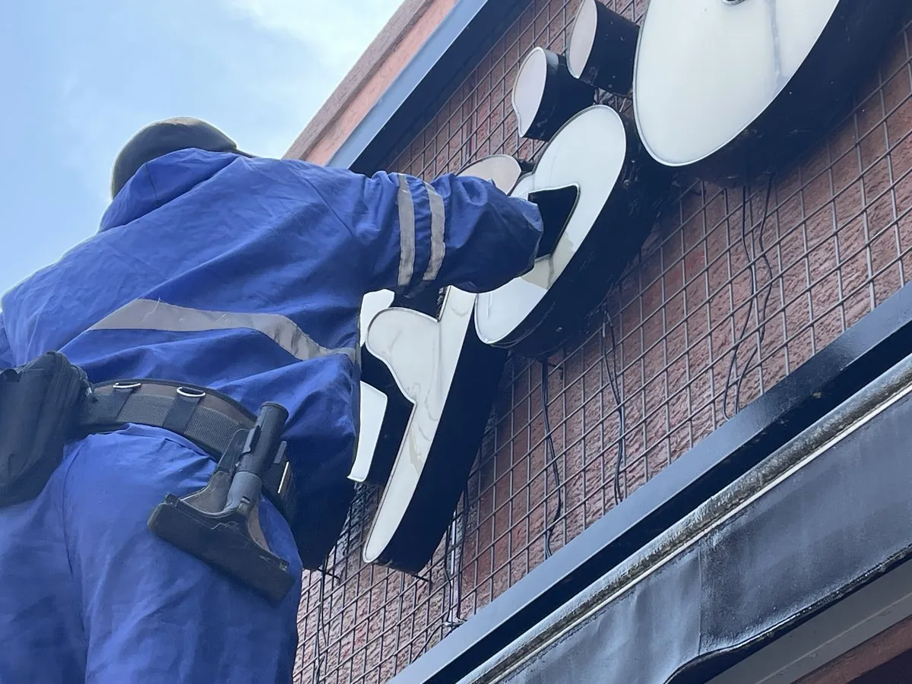

손님 눈에 가장 먼저 들어오는 것은 간판입니다 — 얼룩진 간판은 조명을 켜도 어둡고, 매장 인상을 깎습니다.
간판, 어닝, 쇼윈도 유리는 손님이 매장을 고르는 첫 기준입니다. 파워클린져스는 경상권 전역의 상가와 매장 외관청소를 직영으로 작업합니다. 영업 전 새벽 오전이나 휴무일에 맞춰 작업하고, 출입구와 집기는 보양으로 보호합니다. 매장 전면 사진 한 장이면 견적이 시작됩니다.
영업 전 새벽 오전 시간대나 휴무일에 맞춥니다. 소음 물기가 영업에 닿지 않도록 시간대를 함께 정합니다.
작업 전 간판 전원을 차단하고 배선 소켓 방수 상태를 확인한 뒤 세척합니다. 작업 후 점등까지 확인해 드립니다.
전용 스크래퍼와 약품으로 유리 손상 없이 제거합니다. 오래돼 필름이 뜯길 위험이 있는 경우는 사진 견적 때 미리 알려드립니다.
간판＋어닝＋유리창을 하루에 묶어 30만원부터 진행합니다. 매장 전면 폭과 간판 수를 사진으로 보내주시면 정확한 패키지 금액을 안내합니다.
보양막과 통제선을 설치하고 보행 동선을 확보한 뒤 작업합니다. 옆 매장 간판 집기도 함께 보호합니다.